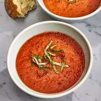

Soup

Description
There's nothing like a homemade soup that's been made using the fresh vegetables grown from your backyard garden. Whether you're looking for a soup your mom used to make, you're feeling under the weather, or you simply enjoy the taste of tomatoes, we have it all right here. So, skip the store-bought brands and keep scrolling through to learn all about the different types of fresh tomato soups you can create using the juicy tomatoes grown in your home garden.
- tomatoes
- onion
- cloves
- butter
- flour
- broth
- sugar
- In a large stockpot, boil the tomatoes, onion, garlic cloves, and chicken broth until the flavors blend together, about 20 minutes.
- Run the mixture through a food mill into a large bowl. This will separate any big chunks, plus the tomato skins.
- If you don't have a food mill, a food processor or immersion blender will work too.
- In the original stockpot, mix melted butter and flour to create a roux.
- Gradually add the tomato mixture to the stockpot, whisking continuously so no lumps form. Season with salt and sugar to taste.
- Store (completely cooled) tomato soup in an airtight container in the refrigerator for up to four days.
Home page